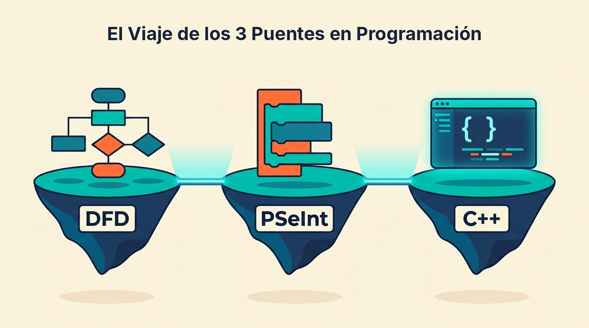

Algoritmos y Programación Desde Cero Hasta Matrices Estáticas
Material pedagógico diseñado para estudiantes de primer semestre: explicación "con plastilina", análisis E-P-S antes de programar, pruebas de escritorio paso a paso, puente guiado entre DFD, PSeInt y C++ básico y dos simulacros completos de parcial con solucionario.

Buscador Rápido de Ejercicios, Consejos y Trampas de Parcial
Encuentra al instante problemas resueltos, patrones en C++, alertas frecuentes de parcial y ejercicios por tema.
Módulos del Curso (M00 – M08 · 30.0 Horas)
Cada módulo incluye documento PDF con estilo visual unificado, apuntes en Markdown y archivos reales en PSeInt, DFD y C++.
4 Fichas Resumen Imprimibles (Hojas de Repaso Rápido)
Diseñadas en 1 página tamaño carta para estudiar antes del parcial. Disponibles en PDF listo para imprimir y PNG de alta resolución.
Visor de Diagramas, DFDs e Ilustraciones
Haz clic en cualquier imagen para abrir el visor ampliado con navegación por teclado (← / → y Esc).
Checklist Interactivo de las 30 Horas (15 Sesiones de 2.0 h)
Marca cada sesión a medida que la estudias o dictas en monitoría. Tu progreso queda guardado automáticamente en este navegador.